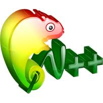
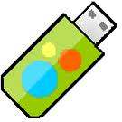
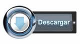

Cuando los usuarios no controlan el programa, el programa controla a los usuarios. El programador controla el programa y, a través del programa, controla a los usuarios. Un programa que no es libre, llamado «privativo», es por lo tanto un instrumento de poder injusto.
Por tanto, el «software libre» es una cuestión de libertad, no de precio. Para entender el concepto, pensemos en «libre» como en «libre expresión», no como en «barra libre».
Un programa es software libre si los usuarios tienen las cuatro libertades esenciales:
Esto le permite ofrecer a toda la comunidad la oportunidad de beneficiarse de las modificaciones. El acceso al código fuente es una condición necesaria para ello.
Mitos del Software Libre |
 Note Pad ++ |
 PimpMyUSB |
|---|---|---|
|  |